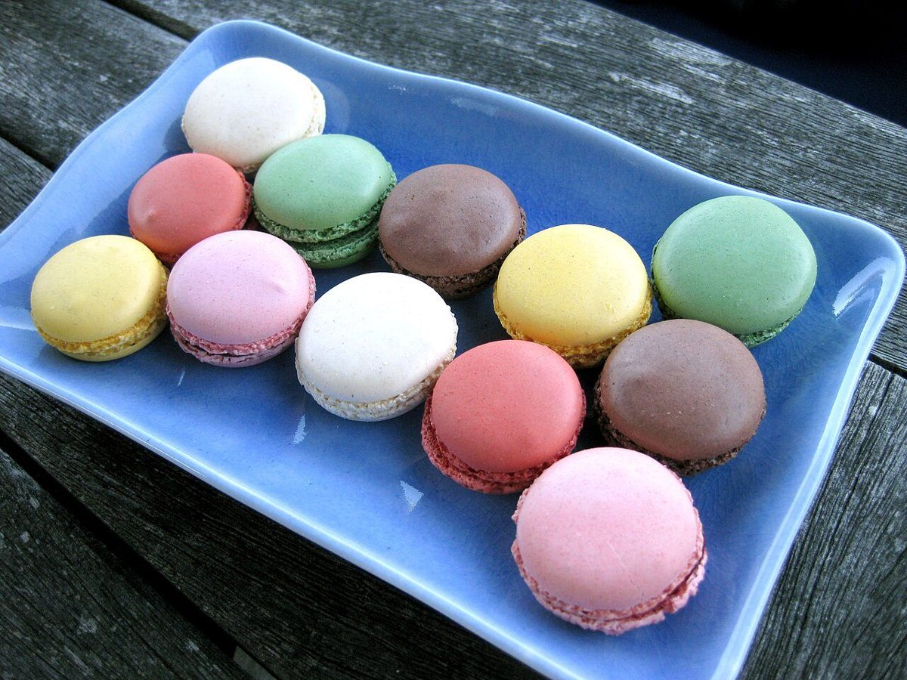

洋菓子店 / 岐阜県大垣市
patisseriepipeパティスリーピペ
岐阜県大垣市にある洋菓子店「patisserie pipe(パティスリーピペ)」のご案内ページです。営業時間やメニューなど、詳しいことは準備中。まずはInstagramをのぞいてみてください。

制作側の連想
「pipe」から、ひと絞りの線を。
店名の由来は分かりません。制作側は「pipe(ピペ)」という響きから、お菓子づくりで使う絞り袋と口金(英語でpiping)を連想しました。そこでこのサイトは、ひと筆書きのように途切れず絞り出された線を、ページの左はしに通しています。お店の理念・由来とは無関係の、制作側の連想です。
口金のちがいで線がかわる
4本の絞り線、4枚の写真。
写真は大垣市やお店のものではなく、国外・撮影地不明のフリー素材です。お店で提供しているお菓子を示すものではありません。
- 丸口金まるくちがね
撮影地不明のイメージ ころんと丸い点が並ぶ線。丸いお菓子の写真から連想しました。
- 星口金ほしくちがね

国外のイメージ(インド) ギザギザの縁取りが続く線。花びらのように並ぶ写真から連想しました。
- 平口金ひらくちがね

撮影地不明のイメージ 平たいリボンのような線。細長くつややかな写真から連想しました。
- 細口金ほそくちがね

撮影地不明のイメージ 細い線でくるくる描く線。渦巻き模様の写真から連想しました。
ご案内
お店のこと(確認できたものだけ)
| 所在地 | 〒503-0888 岐阜県大垣市丸の内2丁目21 |
|---|---|
| 電話 | なし |
| 営業時間 | 準備中 |
| 定休日 | 準備中 |
| ご予約 | 準備中 |
| 駐車場 | 準備中 |
| SNS | Instagram @patisserie_pipe |